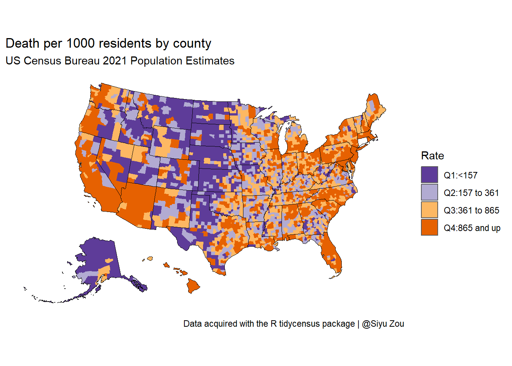
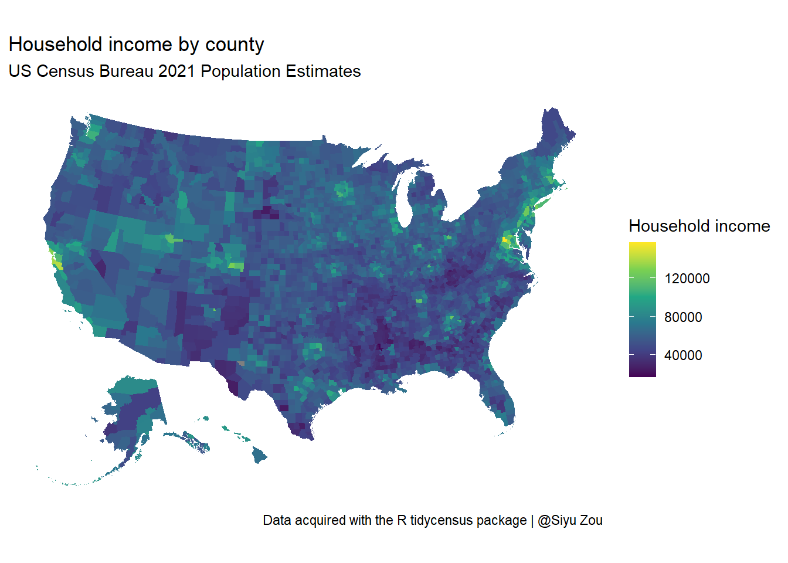
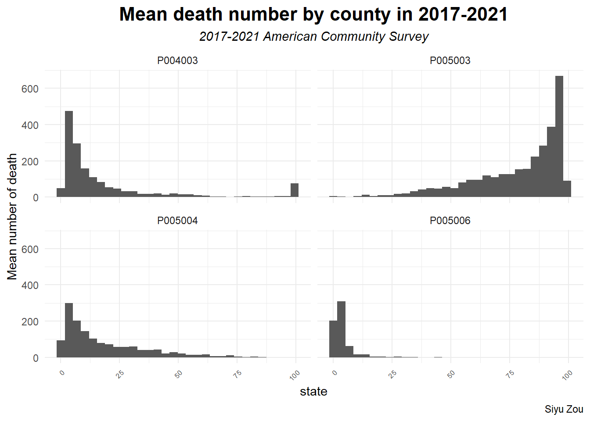
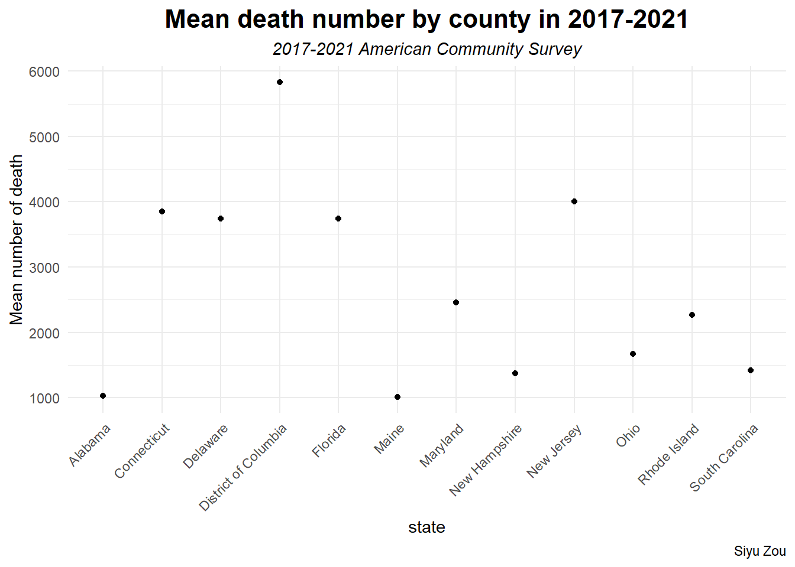

# install.packages("tidycensus")
library(tidycensus)
library(tidyverse)
library(here)
# install.packages("tigris")
library(tigris)
# census_api_key("daad17b2e352ff09f57ec249aa960da11542d78f",install = TRUE )
readRenviron("~/.Renviron")Project3_part2_API
Question
# tests if a directory named "data" exists locally
if (!dir.exists(here("data"))) {
dir.create(here("data"))
}
if (!file.exists(here("data", "US_death.RDS"))) {
US_death <- get_estimates(geography = "county",
variables = "DEATHS",
year = 2021,
geometry = TRUE,
resolution = "20m") %>%
shift_geometry()
# save the files to RDS objects
saveRDS(US_death, file = here("data", "US_death.RDS"))
}
if (!file.exists(here("data", "US_income.RDS"))) {
US_income <- get_acs(geography = "county", variables = "B19013_001",
shift_geo = TRUE, geometry = TRUE)
saveRDS(US_income, file = here("data", "US_income.RDS"))
}
if (!file.exists(here("data", "ethnic_il.RDS"))) {
ethnic_il <- get_decennial(geography = "county", variables = vars10, year = 2010,
summary_var = "P001001", geometry = T)
saveRDS(ethnic_il, file = here("data", "ethnic_il.RDS"))
}Data wrangling
US_death <- readRDS(here("data", "US_death.RDS"))
US_income <- readRDS(here("data", "US_income.RDS"))
ethnic_il <- readRDS(here("data", "ethnic_il.RDS"))
vars10 <- c("P005003", "P005004", "P005006", "P004003")
sum_il <- ethnic_il |>
separate(NAME, c("country", "state"), sep = ",") |>
group_by(state, country) |>
nest() |>
mutate(
data = map(data, ~ {
.x$value <- as.numeric(.x$value)
.x$summary_value <- as.numeric(.x$summary_value)
.x$pct <- 100 * (.x$value / .x$summary_value)
return(.x)
})
) |>
unnest(cols = c(data))
sum_US_death <- US_death |>
separate(NAME, c("country", "state"), sep = "," ) |>
group_by(state) |>
nest() |>
mutate(
stats = map(.x = data, .f = ~tibble(
death_minimum = min(.x$value),
death_maximum = max(.x$value),
death_mean = mean(.x$value)
))
) |>
select(-data) |>
unnest(stats)Plot 1 Death by county
order = c("Q1:<157", "Q2:157 to 361", "Q3:361 to 865", "Q4:865 and up")
US_death <- US_death %>%
mutate(groups = case_when(
value > 865 ~ "Q4:865 and up",
value > 361 ~ "Q3:361 to 865",
value > 157 ~ "Q2:157 to 361",
TRUE ~ "Q1:<157"
)) %>%
mutate(groups = factor(groups, levels = order))
state_overlay <- states(
cb = TRUE,
resolution = "20m"
) %>%
filter(GEOID != "72") %>%
shift_geometry()Retrieving data for the year 2021
|
| | 0%
|
|====== | 8%
|
|============ | 17%
|
|============= | 19%
|
|=================== | 27%
|
|======================== | 34%
|
|============================== | 43%
|
|==================================== | 51%
|
|======================================= | 56%
|
|============================================= | 64%
|
|================================================ | 69%
|
|====================================================== | 77%
|
|============================================================ | 86%
|
|=============================================================== | 90%
|
|======================================================================| 100%ggplot() +
geom_sf(data = US_death, aes(fill = groups, color = groups), size = 0.1) +
geom_sf(data = state_overlay, fill = NA, color = "black", size = 0.1) +
scale_fill_brewer(palette = "PuOr", direction = -1) +
scale_color_brewer(palette = "PuOr", direction = -1, guide = FALSE) +
coord_sf(datum = NA) +
theme_minimal(base_family = "Roboto") +
labs(title = "Death per 1000 residents by county",
subtitle = "US Census Bureau 2021 Population Estimates",
fill = "Rate",
caption = "Data acquired with the R tidycensus package | @Siyu Zou")
Plot 2
ggplot(US_income) +
geom_sf(aes(fill = estimate), color = NA) +
coord_sf(datum = NA) +
theme_minimal() +
scale_fill_viridis_c() +
labs(title = "Household income by county",
subtitle = "US Census Bureau 2021 Population Estimates",
fill = "Household income",
caption = "Data acquired with the R tidycensus package | @Siyu Zou")
Plot 3
sum_il %>%
filter( value > 1000 ) %>%
ggplot(aes(pct)) +
geom_histogram() +
facet_wrap(~variable) +
labs(title = "Mean death number by county in 2017-2021",
subtitle = "2017-2021 American Community Survey",
y = "Mean number of death",
x = "state",
caption = "Siyu Zou") +
theme_minimal() +
theme(
axis.text.x = element_text(angle = 45, hjust = 1, size = 6),
plot.title = element_text(size = 16, face = "bold",hjust = 0.5),
plot.subtitle = element_text(size = 11, face = "italic" ,hjust = 0.5)
)`stat_bin()` using `bins = 30`. Pick better value with `binwidth`.
Plot 4
sum_US_death %>%
filter( death_minimum > 100 ) %>%
ggplot( aes(state, death_mean)) +
geom_point() +
labs(title = "Mean death number by county in 2017-2021",
subtitle = "2017-2021 American Community Survey",
y = "Mean number of death",
x = "state",
caption = "Siyu Zou") +
theme_minimal() +
theme(
axis.text.x = element_text(angle = 45, hjust = 1),
plot.title = element_text(size = 16, face = "bold",hjust = 0.5),
plot.subtitle = element_text(size = 11, face = "italic" ,hjust = 0.5)
)
Function used
dplyr:mutate, filter, group_by, select tidyr: separate, nest ggplot2:geom_sf, geom_point, geom_errorbar